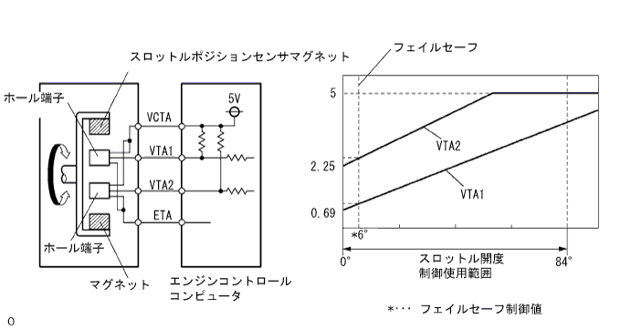
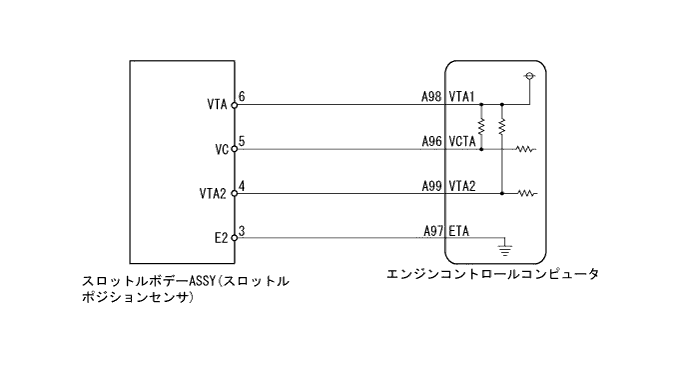
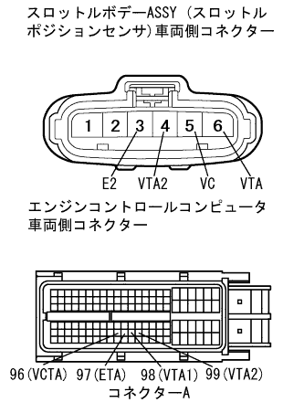
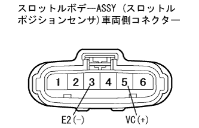

DTC P0120/41 Throttle Sensor System |
DTC P0121/41 Throttle Sensor Out of Range |
DTC P0122/41 Throttle Sensor Open (Low) |
DTC P0123/41 Throttle Sensor Open (High) |
DTC P0220/41 Throttle Sensor No.2 Open |
DTC P0222/41 Throttle Sensor No.2 Open (Low) |
DTC P0223/41 Throttle Sensor No.2 Open (High) |
DTC P2135/41 Throttle Sensor System |

| DTCNo. SAE/TCCS | DTC Detection Condition
| Inspection Area |
|---|---|---|
| P0120/41 |
|
|
| P0121/41 |
|
|
| P0122/41 |
|
|
| P0123/41 |
|
|
| P0220/41 |
|
|
| P0222/41 |
|
|
| P0223/41 |
|
|
| P2135/41 |
|
|
| P2135/41 |
|
|

| Step 1 | Read TaSCAN Data (Throttle Sensor No.1 Voltage / Throttle Sensor No.2 Voltage) |
Apply the parking brake and chock the wheels.
Connect SST (TaSCAN) to DLC3.
Turn IG ON.
Using SST (TaSCAN), operate according to the screen display and select [ECU Data Monitor].
Read [Throttle Sensor No.1 Opening Angle] and [Throttle Sensor No.2 Voltage] with the accelerator pedal fully closed.
Start the engine.
Firmly depress the brake pedal with your left foot and shift to the D position.
Read [Throttle Sensor No.1 Opening Angle] and [Throttle Sensor No.2 Voltage] with the accelerator pedal fully open.
| Throttle sensor No.1 opening angle Accelerator pedal fully closed (IG ON) | Throttle sensor No.2 voltage Accelerator pedal fully closed (IG ON) | Throttle sensor No.1 opening angle Accelerator pedal fully open (IG ON) | Throttle sensor No.2 voltage Accelerator pedal fully open (IG ON) | Trouble Area | Proceed to |
|---|---|---|---|---|---|
| 0% | 0 to 0.2V | 0% | 0 to 0.2V | VC circuit open | A |
| 100% | 4.5 to 5.5V | 100% | 4.5 to 5.5V | E2 circuit open | A |
| 0% or 100% | 2.1 to 3.1V (during fail-safe) | 0% or 100% | 2.1 to 3.1V (during fail-safe) | VTA circuit open or short | A |
| 10 to 24% (during fail-safe) | 0 to 0.2V or 4.5 to 5.5V | 10 to 24% (during fail-safe) | 0 to 0.2V or 4.5 to 5.5V | VTA2 circuit open or short | A |
| 10 to 22% | 2.1 to 3.1V | 64 to 96% | 4.5 to 5.5V | System Normal | B |
|
| ||||
| A | |
| Step 2 | Inspect Wire Harness or Connector (Throttle Position Sensor - Engine Control Computer) |
for reference.Disconnect engine control computer connector A and the throttle position sensor connector.
 |
Using SST (Toyota electrical tester), measure the resistance between the terminals. (For Terminals of ECU, see)
| Tester Connection (Terminal Symbol) | Condition | Standard |
|---|---|---|
| A96(VCTA) - 5(VC) | Always | Below 1 Ω |
| A98(VTA1) - 6(VTA) | Always | Below 1 Ω |
| A99(VTA2) - 4(VTA2) | Always | Below 1 Ω |
| A97(ETA) - 3(E2) | Always | Below 1 Ω |
| Tester Connection (Terminal Symbol) | Condition | Standard |
|---|---|---|
| A96 (VCTA) and 5 (VC) - Other terminals and body ground | Always | 10k Ω or higher |
| A98 (VTA1) and 6 (VTA) - Other terminals and body ground | Always | 10k Ω or higher |
| A99 (VTA2) and 4 (VTA2) - other terminals and body ground | Always | 10k Ω or higher |
| A97 (ETA) and 3 (E2) - Other terminals and body ground | Always | 10k Ω or higher |
|
| ||||
| OK | |
| Step 3 | Inspect Wire Harness and Connector (VC Voltage) |
 |
Connect connector A of the engine control computer.
Turn IG ON.
Using SST (Toyota electrical tester), measure the voltage between the connector terminals.
| Tester Connection (Terminal Symbol) | Condition | Standard |
|---|---|---|
| 5(VC) - 3(E2) | IG ON | 4.5 to 5.5V |
|
| ||||
| OK | |
| Step 4 | Replace Throttle Body Assembly |
Reference| NEXT | |
| Step 5 | Clear DTC |
Turn the IG ON and clear the DTCs following the SST (TaSCAN) screen display. (see)
| NEXT | |
| Step 6 | Check DTC |
Perform a road test.
Check the DTCs by following the SST (TaSCAN) screen display. (see)
| Result | Proceed to |
|---|---|
| DTCs are output | A |
| No DTC is output | B |
)
|
| ||||
| A | ||
| ||